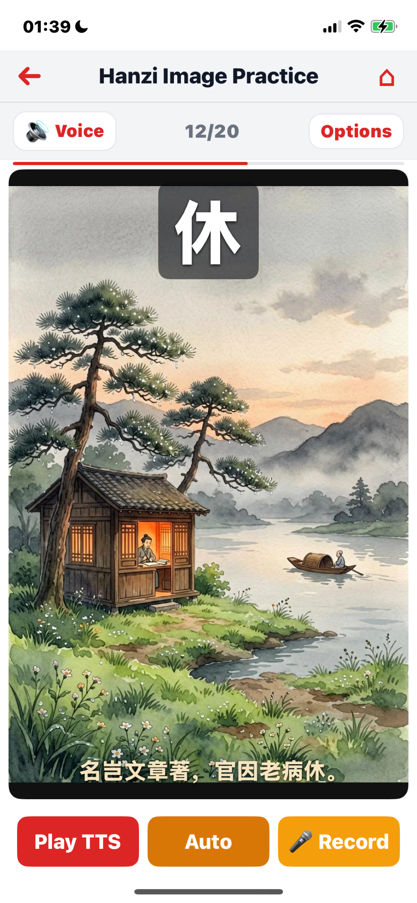

HSK 1–7 characters with strokes, radicals, pinyin HSK 1–7，含笔画、部首、拼音
Common words, idioms (成语), and proverbs (谚语) 常用词、成语、谚语
20 categories × 3 levels — daily life & Chinese culture 20 大分类 × 3 个难度 — 涵盖生活与中国文化
Classical poetry, novels, philosophy, and modern prose 诗歌、小说、子书与现代散文
1. Hanzi (汉字) Learning 1. 汉字学习
Master Chinese characters with comprehensive details and structured practice. 3,000 characters organized by official HSK levels 1–7, covering the complete character set from China's merged proficiency standard. 系统掌握汉字：完整信息 + 结构化练习。3,000 个汉字按官方 HSK 1–7 分级，覆盖中国合并标准全部字集。

HSK 1–7 Progressive Levels HSK 1–7 渐进等级
Characters are grouped by HSK level, providing a clear learning path from beginner to advanced: 按 HSK 等级分组，提供从入门到精通的清晰路径：
- HSK 1 — 300 foundational characters for basic communication Free 300 个基础汉字，用于基本交流 免费
- HSK 2 — 300 characters for simple daily interactions Free 300 个汉字，用于简单日常互动 免费
- HSK 3 — 300 characters for intermediate conversation Free 300 个汉字，用于中级对话 免费
- HSK 4 — 300 characters for complex topics and discussions Pro 300 个汉字，用于复杂话题与讨论 Pro
- HSK 5 — 300 characters for reading newspapers and academic texts Pro 300 个汉字，用于阅读报刊与学术文章 Pro
- HSK 6 — 300 characters for advanced proficiency Pro 300 个汉字，用于高级表达 Pro
- HSK 7 — 1,200 characters for near-native mastery Pro 1,200 个汉字，用于接近母语水平 Pro
Each level is self-contained, so you can start at any level that matches your ability. 每个等级自成一体，可从任何匹配自身水平的等级开始。
Browse By HSK or By Radical (部首) 按 HSK 或按部首浏览
Pick the way that suits your study style. By HSK orders characters by proficiency level. By Radical groups them under 127 Kangxi radical groups plus 1 独体字 (single-component) category, themselves organized into 5 thematic super-categories: 按你的学习风格选择。按 HSK 按等级排序。按部首 把汉字归到 127 个康熙部首组 + 1 个独体字类下，并按 5 大主题分组：
- 人、人体及动作人、人体及动作
- 自然、地理、天象自然、地理、天象
- 动植物、食物动植物、食物
- 器物、材料、衣行器物、材料、衣行
- 独体字独体字
Radical-based browsing mirrors how Chinese dictionaries work and helps you see the structural family of each character — e.g. all characters sharing 水 / 氵 together. 按部首浏览与中文字典的查字方式一致，帮你看到每个字的结构家族 — 例如所有水 / 氵 旁的字放在一起。

Hanzi Image Practice — Visual Memory Mode 汉字配图练习 — 视觉记忆模式
An alternative to text practice: each character is shown with an AI-generated image and overlaid text — the big character itself, plus toggleable layers for pinyin, Chinese definition, English definition, and classical example sentence (with English translation). The same TTS / record / scoring flow as text mode applies; you can run hands-free auto rounds or tap-record each character. Image packs are downloaded per HSK level or per radical group and work offline after download. Switch back to text mode anytime from Options. 文本练习之外的另一种方式：每个字配一张 AI 生成的图片，图上叠加文字 — 大字本身，以及可切换的 拼音、中文释义、英文释义、古文例句（含英文翻译）。流程与文本模式相同：TTS / 录音 / 评分，支持免手自动连播或手动逐字录音。图片包按 HSK 等级或部首分组按需下载，下载后可离线使用。随时可在 Options 切回文本模式。
Each Character Brings Its Own Scene 一个字，一幅场景
The character 休 (xiū, "rest") sits over an AI-generated scene of a scholar reclining by a pine-clad river, with the classical couplet "名岂文章著，官因老病休" anchoring the meaning. Pinyin, Chinese/English definitions, and the example sentence can each be toggled on or off so the same image works for different study depths — from quick recognition to deep literary context. 字 休 叠加在 AI 生成的画面上：苍松河畔，一人在木屋中读书。"名岂文章著，官因老病休" 的古文例句点明字义。拼音、中英释义、例句可逐一开关 — 同一张图既可用于快速识记，也可深入到古文语境。
Rich Character Details 完整汉字信息
Every character entry includes: 每个汉字都包含：
- Stroke count — precise count from the Unihan database笔画数 — 来自 Unihan 数据库的精确笔画数
- Radical — the root component for dictionary lookup部首 — 用于查字典的根组件
- Pinyin — with tone marks for accurate pronunciation拼音 — 带声调标注
- Definitions — in both Chinese and English释义 — 中英文双语
- Example words — compound words containing the character例词 — 含该字的复合词
- Example sentences — with pinyin and English translation例句 — 含拼音与英文翻译
Practice & Test Modes 练习与测试模式
Practice with customizable session sizes (1–300 characters). Test your recognition and recall. Handwriting bands are grouped into elementary, intermediate, and advanced tiers for character writing practice. 自定义练习数量（1–300 字）。测试辨识与回忆。书写练习按初级、中级、高级三档分组。
2. Ci (词语) Vocabulary 2. 词语学习

Build your Chinese vocabulary with 9,443 words and phrases organized by HSK level and character groups. Words are connected to the characters you're learning, reinforcing both simultaneously. 通过 9,443 个词语积累中文词汇，按 HSK 等级与汉字分组组织。词语与你正在学的汉字互相关联，双向巩固。
Three Vocabulary Types 三类词语
- 常用词 (Common Words) — everyday vocabulary essential for daily communication 日常交流必备的高频词
- 成语 (Idioms) — four-character Chinese idioms with rich cultural meaning 四字中文成语，承载丰富文化含义
- 谚语 (Proverbs) — traditional Chinese sayings passed down through generations 代代相传的传统中国谚语
Each word includes detailed definitions in both Chinese and English, part of speech, and related word suggestions. 每个词都包含中英文释义、词性，以及相关词推荐。
Character-Grouped Organization 按汉字聚合
Words are organized by the characters they contain, so as you learn a new character, you simultaneously discover all the words built from it. This approach mirrors how native speakers build vocabulary — through character combinations rather than isolated word lists. 词语按所含汉字聚合 — 学一个新字，同时见到所有由它组成的词。这与母语者通过组字而非孤立词表积累词汇的方式一致。
Practice & Test 练习与测试
Customizable practice sessions with adjustable word counts. Test mode assesses your grasp of meaning, pronunciation, and usage. Performance is tracked across all HSK levels. 可自定义练习的词数。测试模式评估你对词义、发音与用法的掌握。所有 HSK 等级的表现均有跟踪。
3. Dialogue Practice 3. 对话练习

Practice real-world Chinese conversations with 6,000+ dialogues across 20 categories and 3 difficulty levels. Role-play as Speaker A or B with per-line pronunciation scoring. 练习真实汉语对话：6,000+ 段对话覆盖 20 大分类与 3 个难度等级。可选 A 或 B 角色，逐句评分。
20 Conversation Categories 20 大对话分类
Daily Life (10 subcategories): 日常生活（10 小类）：
- Greetings & Introductions问候与介绍
- Shopping & Bargaining购物与砍价
- Transportation & Directions交通与问路
- Dining & Ordering用餐与点单
- Housing & Renting住房与租房
- Banking & Services银行与服务
- Healthcare & Hospital医疗与就医
- Work & Office工作与办公
- Socializing & Friends社交与朋友
- Phone & Internet电话与网络
Chinese Culture (10 subcategories): 中国文化（10 小类）：
- History & Dynasties历史与朝代
- Classical Literature古典文学
- Festivals & Customs节日与习俗
- Traditional Arts传统艺术
- Philosophy & Thought哲学与思想
- Cuisine & Tea Culture饮食与茶文化
- Geography & Travel地理与旅行
- Modern China现代中国
- Education & Exams教育与考试
- Business & Etiquette商务与礼仪
3 Difficulty Levels 3 个难度等级
- Easy — Short exchanges with basic vocabulary and common sentence patterns Free 简短对话，基础词汇与常用句型 免费
- Medium — Longer conversations with richer vocabulary and varied grammar Pro 更长对话，词汇更丰富、语法更多样 Pro
- Hard — Complex dialogues with idiomatic expressions and cultural nuances Pro 复杂对话，含习语表达与文化细节 Pro
Dual-Role Practice with Pinyin & Translation 双角色练习，含拼音与翻译
Every dialogue line displays Chinese characters, pinyin, and English translation side by side. Practice as either speaker with independent pronunciation scoring on accuracy and fluency. Cultural notes provide context for culturally specific terms and customs. 每句对话同时显示 汉字、拼音、英文翻译。可选任一角色练习，独立评分（准确度 + 流利度）。文化注释为文化特色词与习俗提供背景。
Kokoro TTS Voice Picker — 13 Voices Kokoro TTS 嗓音选择器 — 13 种声音
Choose from 3 English and 10 Chinese Kokoro voices (5 female + 5 male for Chinese). Each module remembers its own voice pick, and voices can be paired with pinyin-based synthesis and a slow-speed hint for clearer articulation. 可选 3 种英文与 10 种中文 Kokoro 嗓音（中文含 5 女 + 5 男）。每个模块单独记忆所选嗓音，并支持基于拼音的合成与慢速提示，发音更清晰。
4. Article Reading 4. 文章阅读

Read authentic Chinese texts from classical to modern — 1,291 articles across 6 major categories, with full pinyin annotation and English translations. 阅读从古至今的纯正中文 — 1,291 篇文章，分属 6 大类，全篇标注拼音与英文翻译。
Pre-Qin Masters & Classics (先秦诸子与典籍) — 146 Works 先秦诸子与典籍 — 146 部
The foundational texts of Chinese civilization: 中华文明的奠基之作：
- Laozi 老子 — Dao De Jing (道德经) complete, 81 chapters老子 — 《道德经》全本 81 章
- Sun Wu 孙武 — The Art of War (孙子兵法) complete, 13 chapters孙武 — 《孙子兵法》全本 13 篇
- Confucius 孔子 — The Analects (论语) selected passages孔子 — 《论语》选段
- Mencius 孟子 — selected passages孟子 — 选段
- Zhuangzi 庄子 — selected passages庄子 — 选段
- Shi Jing 诗经 — selected passages《诗经》— 选段
The first 3 works per author are free. Unlock the complete texts with Pro. 每位作者前 3 篇免费。完整内容需 Pro 解锁。
Featured: Four Great Classical Novels (四大名著) — 460 Chapters 精选：四大名著 — 460 回
The cornerstones of Chinese literary tradition, included in full: 中国文学传统的基石，全部完整收录：
- Dream of the Red Chamber 红楼梦 — 120 chapters《红楼梦》— 120 回
- Romance of the Three Kingdoms 三国演义 — 120 chapters《三国演义》— 120 回
- Water Margin 水浒传 — 120 chapters《水浒传》— 120 回
- Journey to the West 西游记 — 100 chapters《西游记》— 100 回
The first 10 chapters of each novel are free. Unlock the complete texts with Pro. Each chapter is broken into individual sentences for pronunciation practice with pinyin support. 每部名著前 10 回免费。完整内容需 Pro 解锁。每回切分为单句，便于带拼音的发音练习。
Classical Poetry (古典诗歌) — 256 Poems 古典诗歌 — 256 首
Works by celebrated poets from the Tang dynasty and beyond: 出自唐代及后世的著名诗人：
- Li Bai 李白 — 37 poems李白 — 37 首
- Du Fu 杜甫 — 28 poems杜甫 — 28 首
- Li Shangyin 李商隐 — 16 poems李商隐 — 16 首
- Wang Wei 王维 — 15 poems王维 — 15 首
- Liu Yuxi 刘禹锡 — 14 poems刘禹锡 — 14 首
- Bai Juyi 白居易 — 14 poems白居易 — 14 首
- Du Mu 杜牧 — 14 poems杜牧 — 14 首
- Meng Haoran 孟浩然 — 7 poems孟浩然 — 7 首
- + many more poets+ 更多诗人
Ci Lyrics (宋词) — 146 Lyrics 宋词 — 146 首
Masterpieces of Song dynasty lyric poetry: 宋代词作精品：
- Xin Qiji 辛弃疾 — 22 lyrics辛弃疾 — 22 首
- Su Shi 苏轼 — 19 lyrics苏轼 — 19 首
- Li Qingzhao 李清照 — 19 lyrics李清照 — 19 首
- Liu Yong 柳永 — 13 lyrics柳永 — 13 首
- Ouyang Xiu 欧阳修 — 12 lyrics欧阳修 — 12 首
- Yan Jidao 晏几道 — 9 lyrics晏几道 — 9 首
- Yan Shu 晏殊 — 8 lyrics晏殊 — 8 首
- + more lyricists+ 更多词人
Classical Prose 古文观止 — 222 Articles 古文观止 — 222 篇
Selected masterworks from the Guwen Guanzhi anthology by authors including Su Shi (苏轼), Han Yu (韩愈), Fan Zhongyan (范仲淹), Tao Yuanming (陶渊明), Liu Zongyuan (柳宗元), Ouyang Xiu (欧阳修), Wang Xizhi (王羲之), Sima Qian (司马迁) and more. 《古文观止》选集精选，作者包括苏轼、韩愈、范仲淹、陶渊明、柳宗元、欧阳修、王羲之、司马迁等。
Modern Prose (近代文章) — 25 Works 近代文章 — 25 篇
Modern Chinese literary works by Lu Xun (鲁迅), Zhu Ziqing (朱自清), Liang Qichao (梁启超), Lao She (老舍), Feng Zikai (丰子恺), Hu Shi (胡适), Yu Dafu (郁达夫), and others. 近代文学名作，作者包括鲁迅、朱自清、梁启超、老舍、丰子恺、胡适、郁达夫等。
Progressive Reading with Pinyin 带拼音的渐进式阅读
Every article comes with complete pinyin annotation and English translation. Toggle pinyin and translations on or off to match your reading level. Sentence-by-sentence TTS playback with auto mode lets you practice reading along hands-free. 每篇文章都附 完整拼音标注 与 英文翻译。可按你的阅读水平开关拼音与翻译。逐句 TTS 播放 + 自动模式，可免手跟读。
5. Hanzi Test (汉字测试) 5. 汉字测试

Reinforce character recognition and recall with three timed test modes. Each question has a 10-second timer and auto-advances after answering. 通过三种限时测试巩固汉字识别与回忆。每题 10 秒计时，答完自动进入下一题。
4 Test Modes 4 种测试模式
Auto-Advance & Wordbook Integration 自动前进 + 生词本联动
After selecting an answer, feedback is shown for 1.2 seconds before automatically moving to the next question. Characters you answer incorrectly are automatically added to your Wordbook for later review. A score of 60% or higher counts as passed. 选完答案后，反馈显示 1.2 秒，然后自动进入下一题。答错的字会被 自动加入 生词本，便于后续复习。正确率达到 60% 即视为通过。
Customizable Sessions 可自定义
Choose which HSK levels to test, enable or disable individual test modes, and set the number of questions per session. Track your accuracy and per-mode statistics after each test. 选择测试的 HSK 等级、开关各测试模式、设置题数。每次测试后查看正确率与分模式统计。
6. Ci Test (词语测试) 6. 词语测试

Test your vocabulary knowledge with the same structured approach as Hanzi Test, adapted for words and phrases. 10-second timer per question with auto-advance. 用与汉字测试相同的结构化方式检验词汇掌握。10 秒计时，自动前进。
4 Test Modes 4 种测试模式
Auto-Advance & Wordbook Integration 自动前进 + 生词本联动
Same smooth experience as Hanzi Test: 1.2-second feedback display, then auto-advance. Missed words are automatically collected into your Wordbook. Track per-mode accuracy and overall performance. 与汉字测试相同的流畅体验：反馈显示 1.2 秒后自动前进。答错的词会自动加入生词本。可查看分模式正确率与整体表现。
Vocabulary Type Selection 词汇类型选择
Choose to test on common words (常用词), idioms (成语), proverbs (谚语), or all combined. Filter by HSK level to match your current learning stage. 可选择只测 常用词、成语、谚语 或全部混合。按 HSK 等级筛选，匹配你的当前学习阶段。
7. Dialogue Test (对话测试) 7. 对话测试

Test your spoken Chinese under time pressure. Record your part in real dialogues and receive multi-dimensional pronunciation scoring for each line. 在限时压力下检验口语。在真实对话中录音，每句获得多维发音评分。
A/B Speaker Recording A / B 角色录音
Play the role of Speaker A, Speaker B, or both. TTS plays the other speaker's lines, and you record yours. Each recording is automatically scored with a timeout based on line length. 扮演 A、B 或双角。TTS 播放对方的词，你录制自己的。每次录音按句子长度自动设置超时并评分。
Multi-Dimensional Scoring 多维度评分
Every line is evaluated on four dimensions: 每句按四个维度评估：
- Accuracy — correctness of individual character pronunciation and tones准确度 — 单字发音与声调的正确性
- Fluency — natural rhythm, pacing, and connected speech流利度 — 自然节奏、停顿与连贯
- Pronunciation — tonal precision for Mandarin's four tones plus neutral tone发音 — 普通话四声 + 轻声的声调精度
- Completeness — whether all characters in the target line were spoken完整度 — 目标句中所有字是否都已读出
Character-Level Color Feedback 逐字颜色反馈
After each attempt, recognized characters are color-coded — green for correct, red for wrong — so you can see exactly which characters need more practice. 每次尝试后，识别出的字会被 着色 — 绿色正确、红色错误 — 一眼看出哪些字需要加强。
Detailed Results 详细结果
After completing a dialogue, swipe through a line-by-line breakdown showing scores for each exchange. Compare your recording against the target to identify specific weaknesses. 完成后可滑动查看 逐句明细，显示每轮对话的得分。对比你的录音与目标，找出具体薄弱点。
8. Article Test (文章测试) 8. 文章测试

Reading comprehension tests based on classical and modern Chinese literature. Choose texts from any category and test your understanding. 基于古今中文文学的阅读理解测试。从任意分类中选择文本，检验理解力。
3 Test Modes 3 种测试模式
Category & Author Selection 分类与作者选择
Choose from all literary categories: 可从所有文学分类中选择：
- Pre-Qin Masters (先秦诸子与典籍)先秦诸子与典籍
- Classical Poetry (古典诗歌)古典诗歌
- Ci Lyrics (宋词)宋词
- Ming-Qing Fiction (四大名著)四大名著
- Classical Prose (古文观止)古文观止
- Modern Prose (近代文章)近代文章
Within each category, select specific authors or books to focus your test. 每个分类下，可选择具体作者或书本来聚焦测试。
Auto-Advance & Scoring 自动前进与评分
After selecting an answer, the correct response is highlighted for 1 second before automatically advancing. Track your accuracy across categories and test modes. Wrong answers are added to your Wordbook. 选完答案后，正确答案会高亮 1 秒，然后自动进入下一题。可跨分类与测试模式跟踪正确率。答错的会加入生词本。